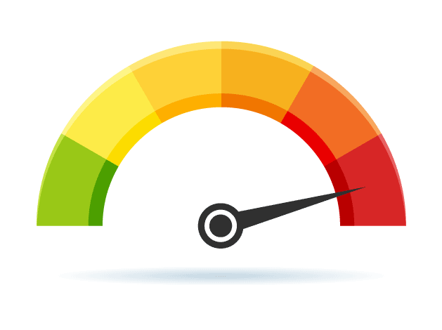

7.24–7.26 Specialized Testing
Beyond standard functional and structural tests, several specialized testing types target specific quality goals — build verification, targeted fixes, performance limits, and architectural layers. Smoke and sanity testing gate daily builds; load and stress testing evaluate performance; frontend and backend testing split concerns across the client–server boundary.
Smoke testing
- Smoke testing is a shallow but wide test of the main functions after a new build is received.
- It acts as build verification — confirming the build is stable enough for further testing, not a deep functional audit.
- The name comes from hardware testing: if the device smokes when powered on, stop testing — similarly, if critical paths fail, reject the build.
- Smoke tests cover login, navigation, core CRUD operations, and other high-level workflows — "Does it smoke?" before investing in detailed testing.
- Failed smoke tests send the build back to development without running the full test suite.
Sanity testing
- Sanity testing is a narrow but deep test of specific functionality that was changed after a minor fix or small enhancement.
- It verifies that the particular change works correctly and that related areas still behave as expected.
- Sanity testing is narrower in scope than regression testing — it focuses on the changed module, not the entire application.
- Sanity testing typically follows a smoke test pass — smoke confirms build stability; sanity confirms the specific fix.
- If sanity fails, the fix is rejected; if it passes, broader regression may follow.
Smoke vs sanity testing
| Dimension | Smoke testing | Sanity testing |
|---|---|---|
| Scope | Shallow and wide — main functions across the product | Narrow and deep — specific changed functionality |
| Purpose | Build verification — is the build testable? | Fix verification — does the specific change work? |
| When | Immediately after receiving a new build | After a minor fix or small code change |
| Depth | Surface-level — critical paths only | Focused depth on the modified area |
| Failure action | Reject build — return to development | Reject fix — developer reworks the change |
Load testing
- Load testing evaluates system behaviour under normal or expected load — the anticipated number of concurrent users or transactions.
- It measures response time, throughput, and resource utilisation (CPU, memory, network) at expected production volume.
- Load testing confirms the system meets performance requirements under typical operating conditions.
- It is a type of non-functional testing — it tests how well the system performs, not what it does functionally.
Stress testing
- Stress testing pushes the system beyond normal capacity to find its breaking point and observe failure behaviour.
- It increases load gradually or suddenly until the system degrades or fails — revealing bottlenecks, memory leaks, and recovery mechanisms.
- Stress testing answers: "What happens when we exceed expected capacity?" — important for capacity planning and graceful degradation design.
- Recovery after stress removal is also evaluated — does the system return to normal operation?

Load vs stress testing
| Dimension | Load testing | Stress testing |
|---|---|---|
| Load level | Normal / expected user volume | Beyond normal capacity — extreme or peak overload |
| Goal | Verify performance meets requirements under typical use | Find breaking point and failure/recovery behaviour |
| Metrics | Response time, throughput, resource usage at expected load | Point of failure, degradation pattern, recovery time |
| Question answered | "Does it perform well enough at expected scale?" | "What happens when we exceed limits?" |
Frontend testing
- Frontend testing validates the user interface (UI), user experience (UX), and client-side logic that runs in the browser or mobile app.
- It covers layout, responsiveness, accessibility, form validation, and JavaScript behaviour.
- Browser compatibility testing ensures the application works across Chrome, Firefox, Safari, Edge, and different screen sizes.
- Tools such as Selenium (see §7.23) are commonly used for automated frontend regression.
Backend testing
- Backend testing validates APIs, database operations, server-side business logic, and integration layers between services.
- It verifies correct data storage, retrieval, transaction integrity, authentication, and authorization on the server.
- Backend tests often run without a UI — using API clients, database queries, and service mocks.
- Performance, security, and data consistency are primary backend testing concerns.
Frontend vs backend testing
| Dimension | Frontend testing | Backend testing |
|---|---|---|
| Focus | UI, UX, client-side logic, presentation layer | APIs, database, server logic, integration layers |
| Environment | Browser, mobile app, rendering engine | Application server, database, microservices |
| Typical checks | Layout, responsiveness, form validation, browser compatibility | API responses, SQL queries, business rules, data integrity |
| Tools | Selenium, Cypress, browser DevTools | Postman, JUnit, database test harnesses, API mocks |
| Visibility | User-visible behaviour | Server-side behaviour often invisible to end user |
Exam question — Specialized Testing
Q: Distinguish smoke and sanity testing. Compare load and stress testing. Explain frontend vs backend testing.
Model answer points:
- Smoke = shallow wide, build verification, "does it smoke?"; Sanity = narrow deep, specific changed functionality after minor fix.
- Load = normal/expected load, performance under typical volume; Stress = beyond capacity, breaking point, recovery behaviour.
- Frontend = UI, UX, client-side, browser compatibility; Backend = APIs, database, server logic, integration layers.
- Smoke rejects bad builds; sanity rejects bad fixes; both are gate checks before deeper testing.
- Common trap: smoke ≠ sanity — smoke is wide/shallow on new build; sanity is narrow/deep on specific change.
- Common trap: load ≠ stress — load tests expected volume; stress tests beyond limits to find failure point.